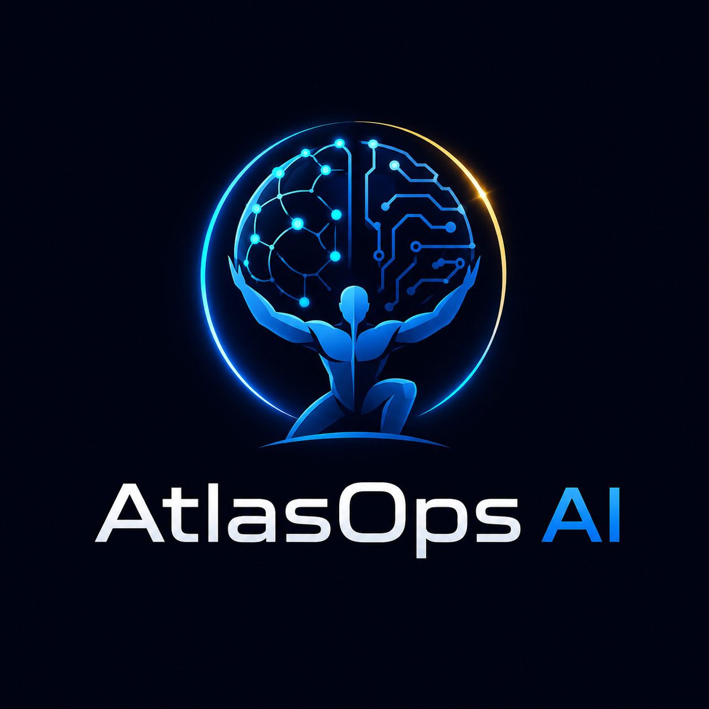

AI Business Automation Audit
$149
Find the first workflow worth automating: lead intake, follow-up, scheduling, estimates, reminders, or content handoffs.
View audit Start Audit
AtlasOps AI reviews public business signals, service pages, website clarity, lead paths, and workflow handoffs so owners can choose the next practical move.
Use the quick prompts or ask your own question. Atlas is service-aware and keeps public intake simple: no passwords, no private files, no sensitive customer data.
Atlas starts with public information. No private access is required to begin.
$149
Find the first workflow worth automating: lead intake, follow-up, scheduling, estimates, reminders, or content handoffs.
View audit Start Audit$199
Review whether your website clearly explains who you help, what you solve, what proof you show, and what question you answer best.
View audit Pay by Credit Card$299
Pair workflow automation mapping with website clarity improvements so people and AI systems can understand your offer.
View bundle Start BundleAtlas watches source-backed AI, automation, RAG, governance, and code-intelligence signals and turns them into practical business takeaways.
The public site is only the doorway. The business loop is simple: ask, qualify, intake, pay when ready, deliver the report, improve the next cycle.
Practical frameworks for AI visibility, automation, agent workflows, and RAG-backed answers.
Why ranking and being recommended are becoming different problems.
Read noteStart with one workflow, one owner, and one measurable handoff.
Read noteUseful agents need source checks, boundaries, and clear handoffs.
Read noteAI SEO, workflow automation, agentic operations, RAG systems, code intelligence, governance, small business AI adoption, and service-business lead paths.